Docs fixes, the focus ring and the sheet bar
2026-11-08. Before (866c4f9) and after. Record: concept/concept.md → Docs and two components: the ring on the edge, text-only sheet buttons, Foundations as quote, tokens, example.
Color: a swatch beside every role
Before: the role cells had no visible swatch (the size came from the lesson pages). After: each role shows its dark and light swatches beside its name, and the Dark and Light cells draw theirs.
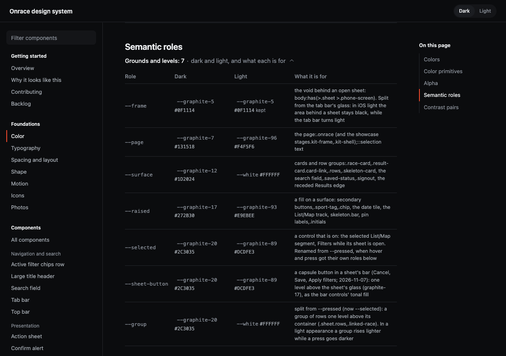
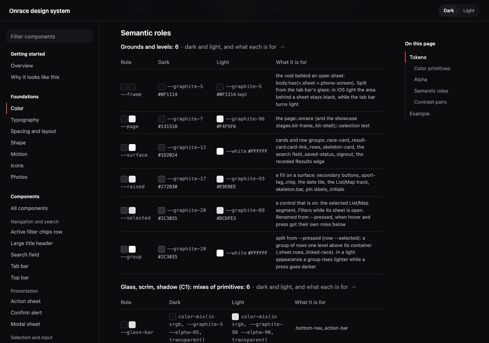
Motion: what each token is for
Each motion token now carries its source comment in tokens.css. The page is the DESIGN.md quote, the tokens, then a live example.
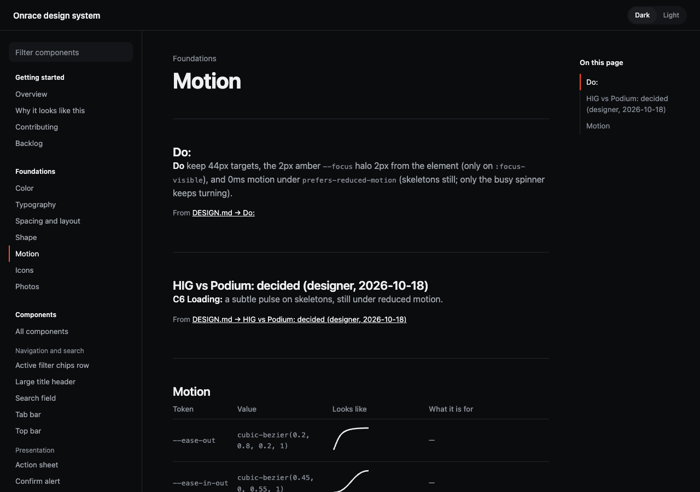
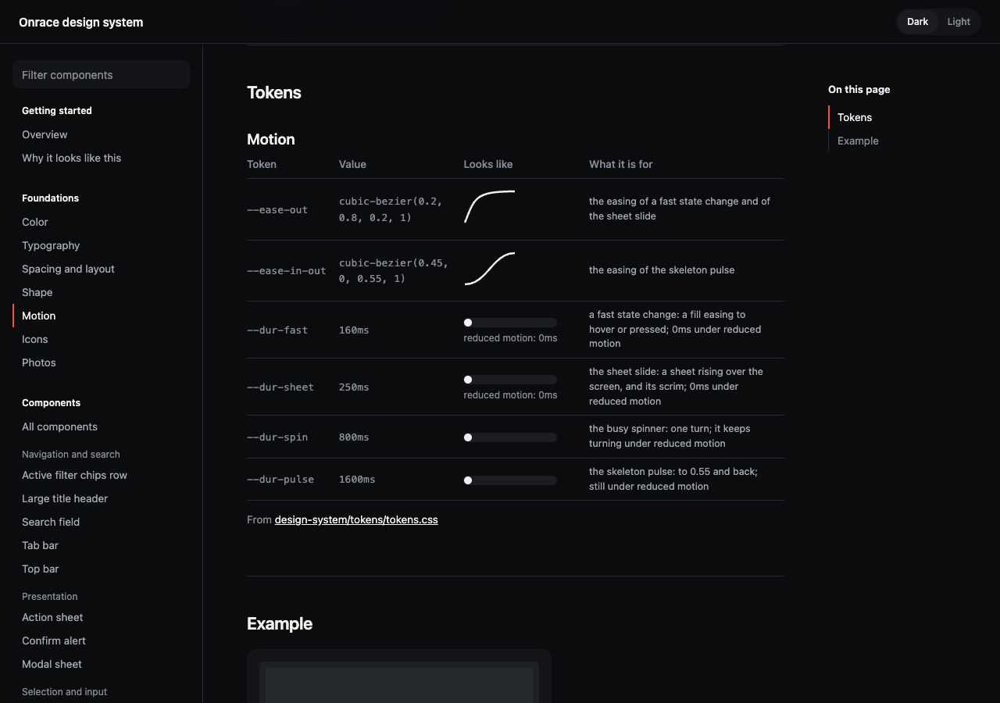
Photos
Before: --date-col sat with the photo tokens and DESIGN.md headings were the page headings. After: the quote, --photo-ratio and --photo-filter, and a race card with its photo at 3:1.
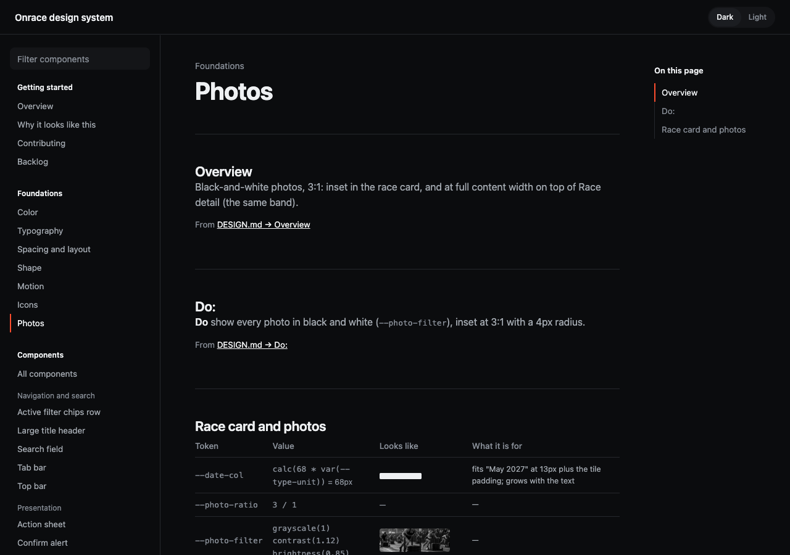
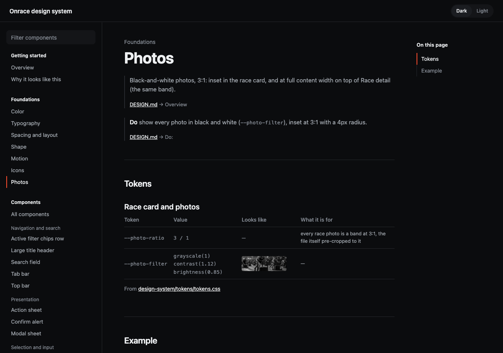
States: keyboard focus in its own row
Focus leaves the tap states and shows in a labelled row, Keyboard focus (iPad keyboard, Full Keyboard Access). The ring sits on the edge: on the amber button it meets the fill.
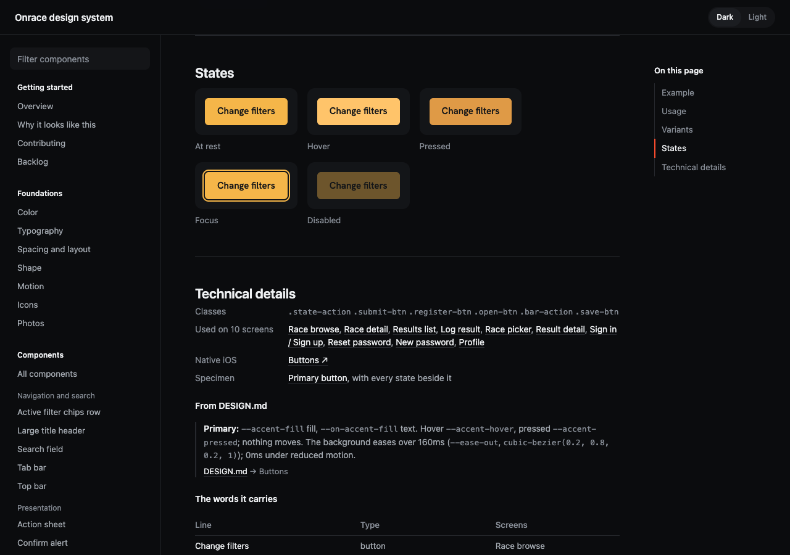
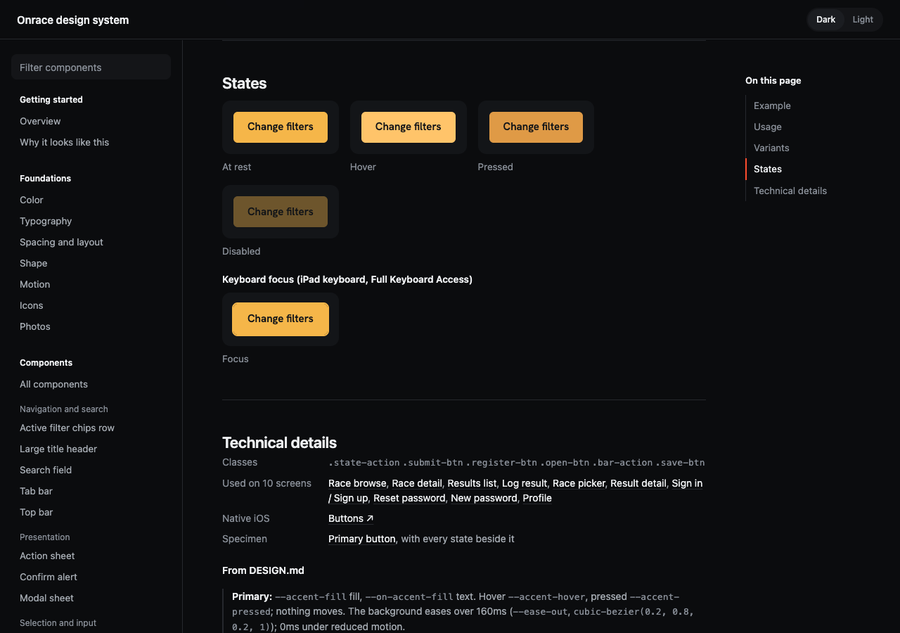
The sheet's bar
Before: Cancel and Save on gray capsules. After: text only, Cancel neutral, Save in the amber ink, each a 44pt target inset from the corner.
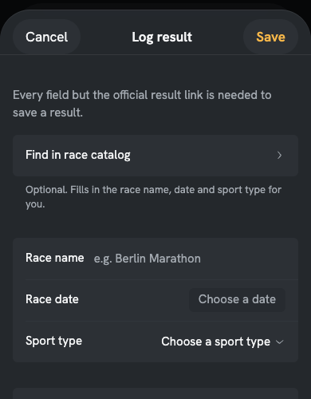
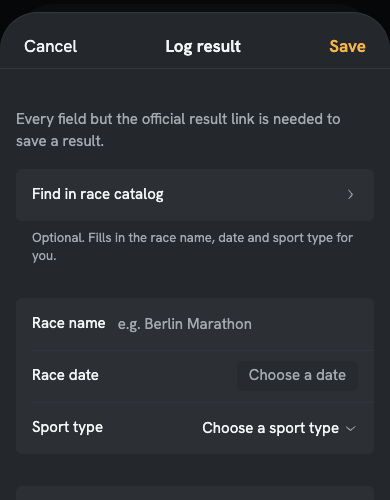
The sheet's bar, Save focused
Before: the capsule ring with a gap. After: the text control ring round the word, on its edge.
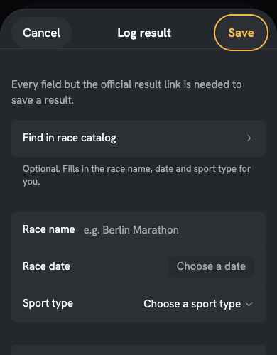
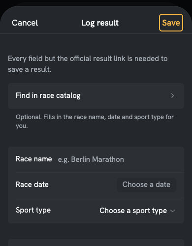
The primary button focused, from a keyboard
Before: the ring 2px out, the ground showing through. After: the ring directly on the edge; amber meets amber, so it reads as the button 2px larger.
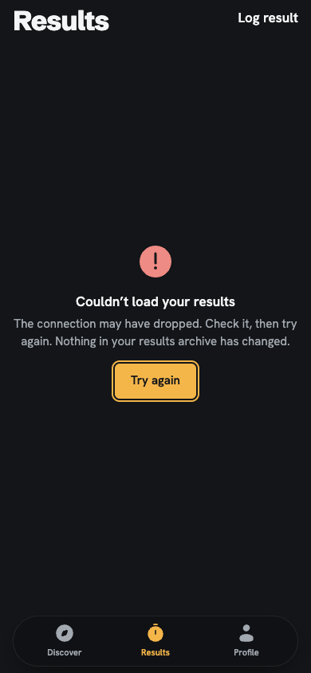
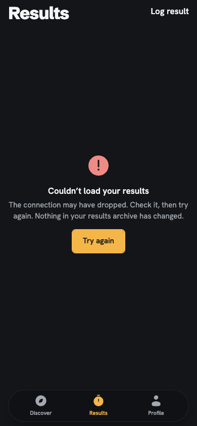